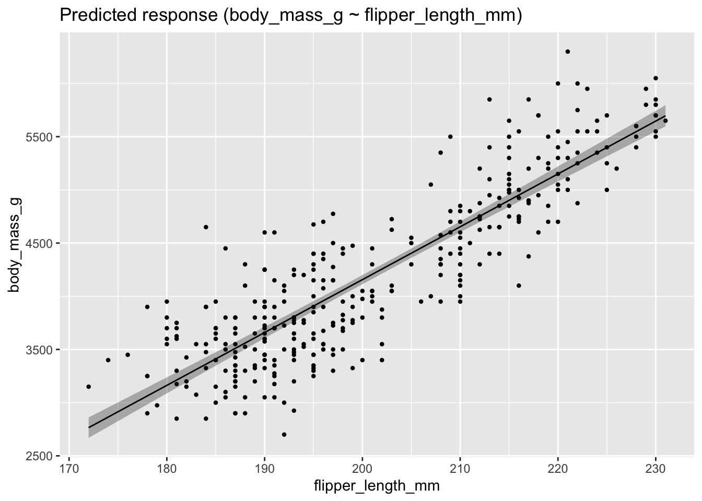
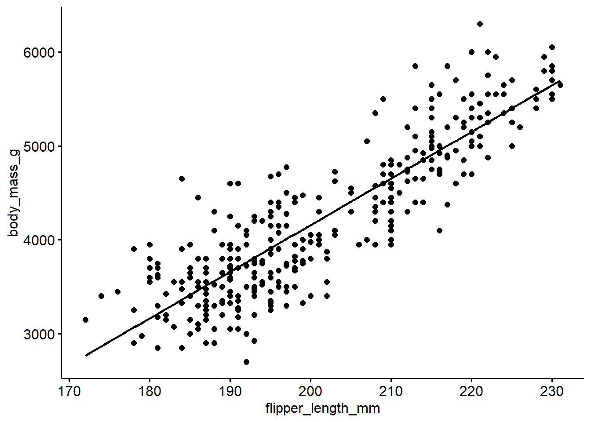
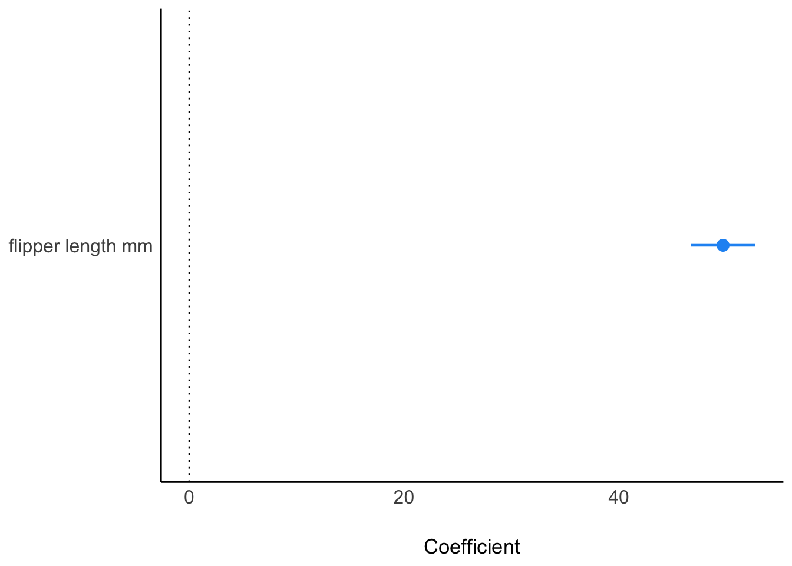

library(tidyverse)
library(easystats)
library(ggpubr)
# import data:
penguins <- read.csv("https://vincentarelbundock.github.io/Rdatasets/csv/palmerpenguins/penguins.csv")penguins-lm
lm
en
regression
penguins
1 Exercise
Consider the dataset penguins. Compute a linear model with body mass as output variable (DV) and flipper length as input (IV).
- Report the coefficients and interpret them.
- Plot the model and the coefficients.
- Report the model fit (R squared).
- BONUS:
predict()the weight of an average flipper-sized animal. Check out the internet for examples of how to do so in case you need support.
2 Solution
2.1 Setup
2.2 Let’s go
lm1 <- lm(body_mass_g ~ flipper_length_mm, data = penguins)Plot the model:
plot(estimate_relation(lm1))
Alternative plotting method:
ggscatter(penguins,
x = "flipper_length_mm",
y = "body_mass_g",
add ="reg.line")
Coefficients (parameters):
parameters(lm1)| Parameter | Coefficient | SE | CI | CI_low | CI_high | t | df_error | p |
|---|---|---|---|---|---|---|---|---|
| (Intercept) | -5781 | 305.8 | 0.95 | -6382 | -5179 | -19 | 340 | 0 |
| flipper_length_mm | 50 | 1.5 | 0.95 | 47 | 53 | 33 | 340 | 0 |
Plot the coefficients:
plot(parameters(lm1))
Model fit (explained variance by model):
r2(lm1)# R2 for Linear Regression
R2: 0.759
adj. R2: 0.758Predict weight of average animal:
penguins |>
summarise(flipper_length_mm_avg =
mean(flipper_length_mm, na.rm = TRUE))| flipper_length_mm_avg |
|---|
| 201 |
2.3 For average flipper length, what’s the expected weight?
predict(lm1, newdata = data.frame(flipper_length_mm = 200)) 1
4156 Around 4 kgs.
2.4 Centering the data
Center the data:
penguins_c <-
penguins |>
mutate(flipper_length_mm_c = center(flipper_length_mm))Now the mean value is (nearly) zero:
mean(penguins_c$flipper_length_mm_c, na.rm = TRUE)[1] -1.2e-14Run the model again:
lm2 <- lm(body_mass_g ~ flipper_length_mm_c, data = penguins_c)
parameters(lm2)| Parameter | Coefficient | SE | CI | CI_low | CI_high | t | df_error | p |
|---|---|---|---|---|---|---|---|---|
| (Intercept) | 4202 | 21.3 | 0.95 | 4160 | 4244 | 197 | 340 | 0 |
| flipper_length_mm_c | 50 | 1.5 | 0.95 | 47 | 53 | 33 | 340 | 0 |